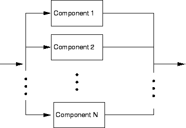
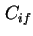
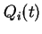
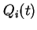
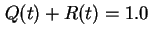
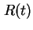

Next: ระบบ ใน
Up: การหาค่าความน่าเชื่อถือโดยการจำลองแบบแจกแจงการทำงาน
Previous: ระบบอนุกรม
Contents
Index
ระบบขนาน
ในระบบขนาน ถ้าเพียงหนึ่งโมดูลในจำนวน  ทำงานได้ ระบบจะสามารถทำงานได้ ตัวอย่างเช่นถ้าครอบครัวมีรถยนต์สองคัน ถ้าคันหนึ่งเสีย ก็ยังสามารถดำเนินกิจกรรมต่อไปได้โดยไม่กระทบมากนัก ความน่าจะเป็นที่จะมีรถยนต์ทำงานได้สามารถทำโดยการจำลองระบบให้เป็นแบบขนาน
แผนภาพกล่องของระบบขนานพี้นฐานแสดงในรูป 10.4 จากรูปจะพบว่าตราบใดที่ยังมีหนึ่งโมดูลทำงานได้อยู่ การต่อเชื่อมระหว่างอินพุทและเอาท์พุทยังคงอยู่ หมายความว่าระบบยังคงทำงานได้ปกติ
ทำงานได้ ระบบจะสามารถทำงานได้ ตัวอย่างเช่นถ้าครอบครัวมีรถยนต์สองคัน ถ้าคันหนึ่งเสีย ก็ยังสามารถดำเนินกิจกรรมต่อไปได้โดยไม่กระทบมากนัก ความน่าจะเป็นที่จะมีรถยนต์ทำงานได้สามารถทำโดยการจำลองระบบให้เป็นแบบขนาน
แผนภาพกล่องของระบบขนานพี้นฐานแสดงในรูป 10.4 จากรูปจะพบว่าตราบใดที่ยังมีหนึ่งโมดูลทำงานได้อยู่ การต่อเชื่อมระหว่างอินพุทและเอาท์พุทยังคงอยู่ หมายความว่าระบบยังคงทำงานได้ปกติ
Figure 10.4:
แผนภาพกล่องของระบบขนาน
|

|
ความไม่น่าเชื่อถือของระบบแบบขนาน สามารถคำนวณจากความน่าจะเป็นที่ โมดูลเสียพร้อมกันหมดทั้งสิ้น ให้  เป็นเหตุการณ์ที่โมดูล  สามารถทำงานล้มเหลวที่เวลา
สามารถทำงานล้มเหลวที่เวลา  และ  เป็นค่าความไม่น่าเชื่อถือของโมดูล ที่เวลา ค่าความไม่น่าเชื่อถือของระบบ
คือค่าความน่าจะเป็นที่ทุกโมดูลเสีย สามารถเขียนได้เป็น
และ  เป็นค่าความไม่น่าเชื่อถือของโมดูล ที่เวลา ค่าความไม่น่าเชื่อถือของระบบ
คือค่าความน่าจะเป็นที่ทุกโมดูลเสีย สามารถเขียนได้เป็น
หรือ
ค่าความน่าเชื่อถือของระบบขนานสามารถคำนวณได้ เนื่องจากผลรวมระหว่างค่าความน่าเชื่อถือ และค่าความไม่น่าเชื่อถือของระบบมีค่าเท่ากับ 1.0 หรือ
 เราจะได้
สำหรับระบบขนานที่ประกอบด้วยโมดูลที่เหมือนกันทุกประการสองโมดูล จะมีค่าความน่าเชื่อถือเท่ากับ
โดยค่า  เป็นค่าความน่าเชื่อถือของแต่ละโมดูล
Vara Varavithya
2002-03-09